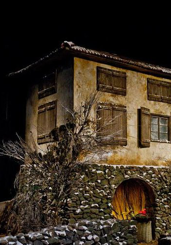
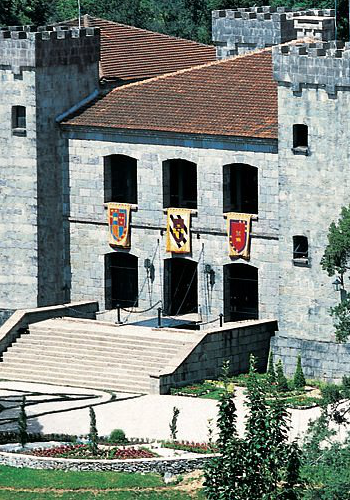
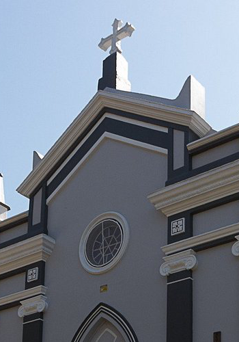
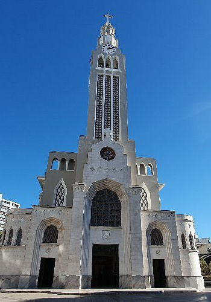

Parque Cultural Epopeia Italiana
-Conheça a origem da cultura Italiana na região do Rio Grande do Sul
-Degustação de suco de uva, vinho e biscoitos caseiros.
-Nove cenários da vida real construídos especialmente para o show.

Castelo Lacave
O Castelo Lacave é o resultado de um sonho do empreendedor uruguaio Juan Carrau, que seguiu uma planta original de um Castelo Medieval espanhol do século XI
Seu objetivo era montar ali uma vinícola e elaborar vinhos finos

Estrada do Imigrante
Desrição

Igreja São Pellegrino
